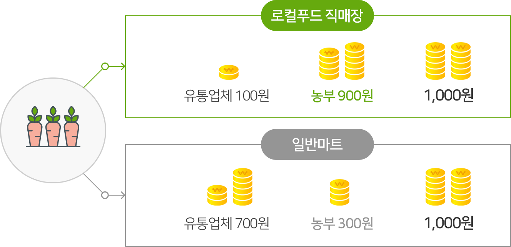

왜 로컬푸드인가
하나! 신선해요
보통 유통기간이 5~6일인 일반 농산물에 비해 로컬푸드 농산물은
하루 이내에 유통되기 때문에 훨씬 신선하고 맛과 영양도 좋습니다
둘! 믿을 수 있다
언제, 어디서, 누가, 어떻게 생산하여 나에게 왔는지
알 수 있는 “얼굴 있는 먹거리” 이기에 믿고 먹을 수 있습니다.
셋! 소비자, 생산자 모두 가격에 웃는다
소비자는 가격이 싸서 좋고 농부는 수익이 늘어나니 좋습니다

넷! 푸드마일리지가 줄어든다
로컬푸드는 가까운 먹을거리이기에
로컬푸드를 이용하면 푸드 마일리지를 줄일 수 있습니다.
다섯! 식량 주권을 지킨다
먹을거리를 수입에 식량주권에 위협이 됩니다.
로컬푸드는 식량주권을 지키는 힘이 됩니다.
여섯! 지역경제가 살아난다
글로벌 푸드를 이용하면 우리 지역 밖에 있는 대형마트,
대규모 농산물 유통업체로 돈이 빠져나가게 되지만
로컬푸드를 이용하게 되면 지역 유통업체와 농민들에게
돈이 돌아가게 되어 지역에 돈이 머무르게 됩니다.